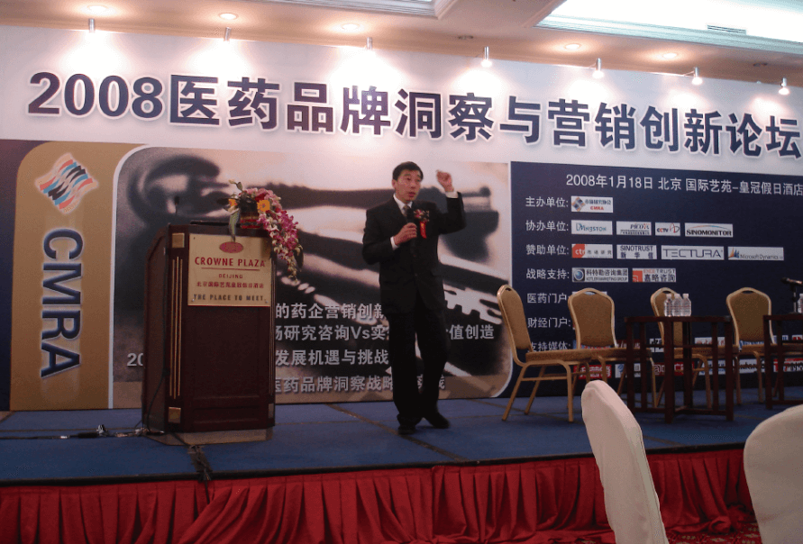
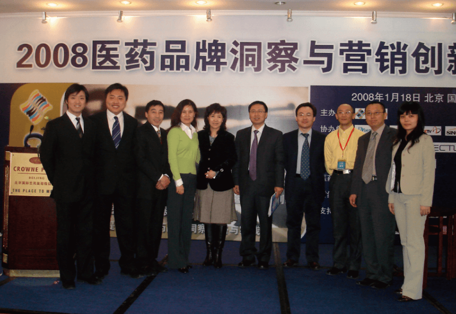
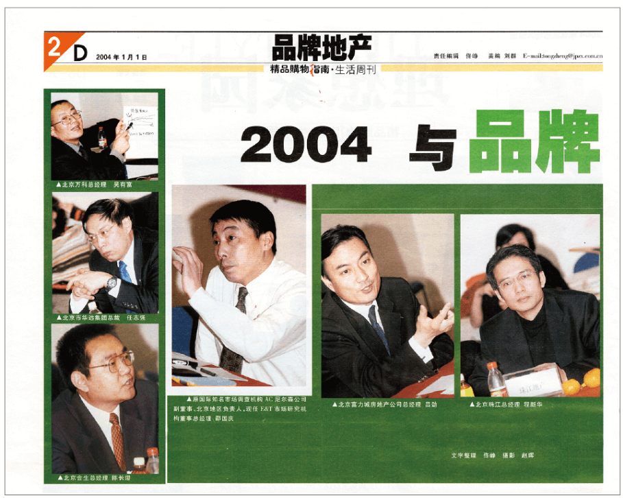
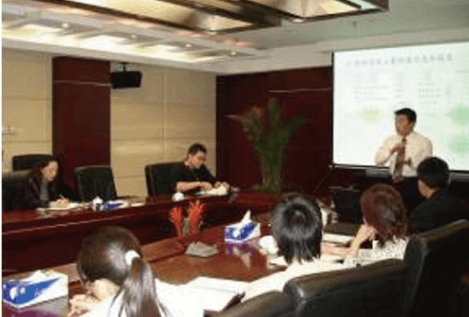
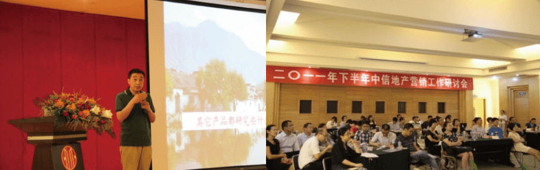
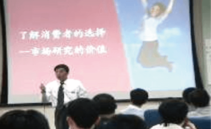
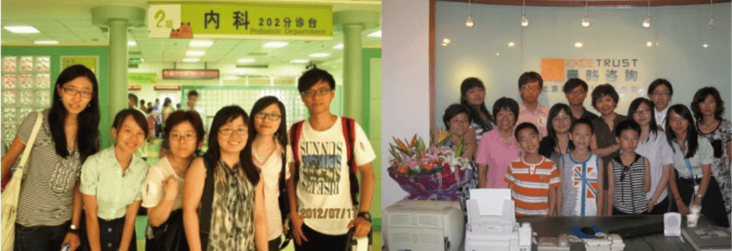
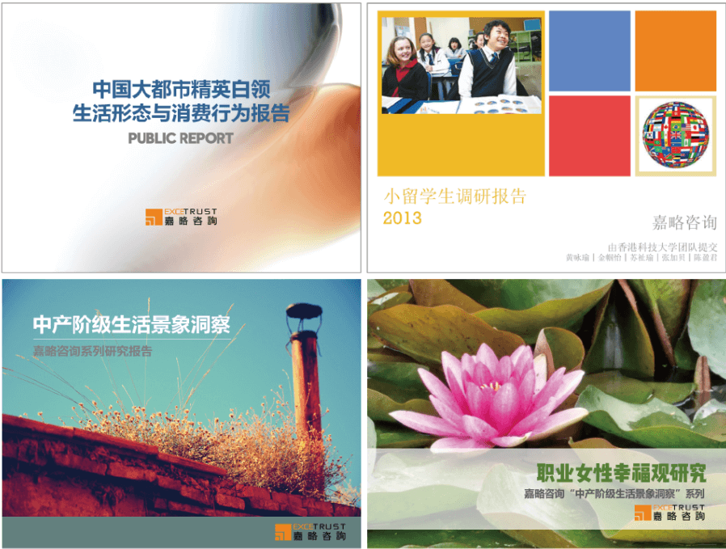

医药品牌洞察与营销创新论坛
 嘉略咨询作为战略支持单位参与CMRA中国市场研究协会主办的2008医药品牌洞察与营销创新论坛，并由公司研究童事邵国庆先生发表主题演讲。 
召集品牌开发商聚首 听业生们品头论足嘉略专家主持2004京城地产品牌高峰论坛
第一次由嘉略专家邵国庆先生在嘉略咨询办公室主持的房地产品牌论坛，对于习惯凭借政府关系和银行资源的中国地产行业老总，体验尝试了如何理性地使用专业化的市场研充工具，为这些领先企业提供了市场经济竞拿下重视消费者意见的积极参考与启发。 邵先生受中国经营报精品购物指南邀请主持了这次论坛 。深入探讨了什么是品牌、品牌风险及各自的居住体验。嘉略单面镜前，地产营销出身的Jenny与12家地产品牌的业主代表举行焦点小组访谈。观察镜背后，任志强等老总们第一次亲 耳听到业主们的评价，各抒己见，交流对地产品牌的看法与经验。老总们认识到：“地产品牌时代已经到来” 
嘉略专家应邀参加方正品牌年会
为长期客户服务中，嘉路努力将市场研究与企业实际应用结合，以“指导手朋”的方式帮助企业提升竞争力，而不是让管理者觉得无从下手。 如何借助市场研究来推动企业发展，是每个企业经营管理者最关心的话题之一。邵国庆先生将多年经验与实际 案例相结合，为方正集团总裁级管理者提供了一场深入浅出的〞 企业管理者如何借助市场研究推动企业发展”的讲座。 
为中信地产营销管理层做市场培训
2011年8月，应中信地产高层的邀请，嘉路咨询资深董事邵国庆为中信地产中高层进行 “地产行业中的市场研究〞的演讲，将市场研究与地产行业的特点相结合，深人浅出的讲解如何更好了解消费者，并以黄山产品定位 项目为案例进行深层剖析。 演讲成果大受成功，会后与各位与会者就产品定位，客户忠诚度进行了深入探讨。 
为华润高管提供讲座和评南
 2005年5月28日，嘉略咨询 研究董事邵国庆先生接受华 润高层委托，分享专业市场 研究的成功与经验，帮助华润接受国际市场经济的基本概念，增加市场竞争力！
嘉路志愿者行动-血友病儿童关爱
2012年6月，嘉略咨询首先在北京儿童医院与家长们作了深入交流，了解了他们的情况和愿望。7月，嘉略教育在北京儿童医院举办了探访活动，为孩子送上祝福，分享快乐。来自哈佛大学、清华大学还有香港科技大学的实习生把嘉略的礼物送给了需要关爱的儿童。 第三次活动，嘉略研究员在公司里专门为重症血友病儿童代表做心理陪伴和游戏活动，为家长们提供血友病健康维护知识的分享和传授。 
嘉略的社会公共报告
 嘉略公共报告选题来自研究员的项目空档期，由他们自 主选题，主要是当前社会热点，比如“大学生就业” 〝职业女性幸福观” “小留学生和家长心理需求“。